Modelo factorial: ANOVA de dos vias
Miguel Tripp
2021-05-29
Last updated: 2021-08-01
Checks: 7 0
Knit directory: 2021/
This reproducible R Markdown analysis was created with workflowr (version 1.6.2). The Checks tab describes the reproducibility checks that were applied when the results were created. The Past versions tab lists the development history.
Great! Since the R Markdown file has been committed to the Git repository, you know the exact version of the code that produced these results.
Great job! The global environment was empty. Objects defined in the global environment can affect the analysis in your R Markdown file in unknown ways. For reproduciblity it’s best to always run the code in an empty environment.
The command set.seed(20210412) was run prior to running the code in the R Markdown file. Setting a seed ensures that any results that rely on randomness, e.g. subsampling or permutations, are reproducible.
Great job! Recording the operating system, R version, and package versions is critical for reproducibility.
Nice! There were no cached chunks for this analysis, so you can be confident that you successfully produced the results during this run.
Great job! Using relative paths to the files within your workflowr project makes it easier to run your code on other machines.
Great! You are using Git for version control. Tracking code development and connecting the code version to the results is critical for reproducibility.
The results in this page were generated with repository version 7628720. See the Past versions tab to see a history of the changes made to the R Markdown and HTML files.
Note that you need to be careful to ensure that all relevant files for the analysis have been committed to Git prior to generating the results (you can use wflow_publish or wflow_git_commit). workflowr only checks the R Markdown file, but you know if there are other scripts or data files that it depends on. Below is the status of the Git repository when the results were generated:
Ignored files:
Ignored: .Rhistory
Ignored: .Rproj.user/
Ignored: analysis/hero-image.html
Ignored: analysis/poke_logo.png
Untracked files:
Untracked: Curso_Bioestadistica_MTripp_cuatriII.docx
Untracked: Curso_Bioestadistica_MTripp_cuatriII.pdf
Untracked: Diapositivas/
Untracked: Prueba_markdown.Rmd
Untracked: Prueba_markdown.pdf
Untracked: README.html
Untracked: Resources/
Untracked: Tarea_Tstudent.Rmd
Untracked: Tarea_Tstudent.docx
Untracked: Tarea_Tstudent.html
Untracked: Tarea_Tstudent.pdf
Untracked: analysis/Clase13_noParam.Rmd
Untracked: analysis/hero_backgroud.jpg
Untracked: analysis/images/
Untracked: analysis/style.css
Untracked: analysis/test.Rmd
Untracked: code/tarea_macrograd.R
Untracked: data/CS_subset.csv
Untracked: data/Consumo_oxigeno_wide.csv
Untracked: data/Darwin_esp.csv
Untracked: data/Data_enzimas_Experimento1.txt
Untracked: data/Data_enzimas_Experimento2.txt
Untracked: data/Data_enzimas_Experimento3.txt
Untracked: data/Data_enzimas_Experimento4.txt
Untracked: data/DownloadFestival(No Outlier).dat
Untracked: data/Festival.csv
Untracked: data/Hful_metabolitos_ver2.csv
Untracked: data/Longitud_noParam.csv
Untracked: data/LungCapData.txt
Untracked: data/LungCapDataEsp.csv
Untracked: data/PalmerPenguins.csv
Untracked: data/Pokemon_tabla.csv
Untracked: data/Pokemon_tabla.xls
Untracked: data/RExam.dat
Untracked: data/Rexamendat.csv
Untracked: data/Tabla1_Muestreo.txt
Untracked: data/Transcriptome_Anotacion.csv
Untracked: data/Transcriptome_DGE.csv
Untracked: data/Vinogradov_2004_Titanic.tab
Untracked: data/Vinogradov_2004_Titanic.tab.csv
Untracked: data/data_tukey.txt
Untracked: data/exp_macrogard_growth.tab
Untracked: data/exp_macrogard_rna-dna.tab
Untracked: data/fertilizantes_luz.csv
Untracked: data/gatos_sueno.csv
Untracked: data/macrogard_crecimiento.csv
Untracked: data/pokemon_extended.csv
Untracked: output/Plot_all_penguins.pdf
Untracked: output/Plot_all_penguins.tiff
Untracked: output/graficos/
Unstaged changes:
Modified: analysis/_site.yml
Note that any generated files, e.g. HTML, png, CSS, etc., are not included in this status report because it is ok for generated content to have uncommitted changes.
These are the previous versions of the repository in which changes were made to the R Markdown (analysis/Clase9_anova2vias.Rmd) and HTML (docs/Clase9_anova2vias.html) files. If you’ve configured a remote Git repository (see ?wflow_git_remote), click on the hyperlinks in the table below to view the files as they were in that past version.
| File | Version | Author | Date | Message |
|---|---|---|---|---|
| html | 5aafed2 | Miguel Tripp | 2021-08-01 | Build site. |
| html | 2bc601a | Miguel Tripp | 2021-07-31 | Build site. |
| Rmd | b4e67dc | Miguel Tripp | 2021-07-31 | workflowr::wflow_publish(c(“analysis/index.Rmd”, “analysis/about.Rmd”, |
| html | 03db7ff | Miguel Tripp | 2021-07-25 | Build site. |
| html | fcb9047 | Miguel Tripp | 2021-07-25 | Build site. |
| html | 2adc7a9 | Miguel Tripp | 2021-07-24 | Build site. |
| html | 9d09420 | Miguel Tripp | 2021-07-22 | Build site. |
| html | 0f7eb2d | Miguel Tripp | 2021-07-12 | Build site. |
| html | 82e4deb | Miguel Tripp | 2021-07-08 | Build site. |
| html | bc7c1d7 | Miguel Tripp | 2021-07-07 | Build site. |
| html | 01ac301 | Miguel Tripp | 2021-07-04 | Build site. |
| html | 392444f | Miguel Tripp | 2021-07-04 | Build site. |
| html | c188ae8 | Miguel Tripp | 2021-06-29 | Build site. |
| Rmd | 1957148 | Miguel Tripp | 2021-06-29 | Publish the initial files for myproject |
| html | 1136768 | Miguel Tripp | 2021-06-28 | Build site. |
| Rmd | 1e31e56 | Miguel Tripp | 2021-06-28 | Publish the initial files for myproject |
| html | a33d4bb | Miguel Tripp | 2021-06-23 | Build site. |
| Rmd | 9ee1115 | Miguel Tripp | 2021-06-23 | Publish the initial files for myproject |
| html | 209299f | Miguel Tripp | 2021-06-21 | Build site. |
| Rmd | 851d5af | Miguel Tripp | 2021-06-21 | Publish the initial files for myproject |
1 Generalidades
En el capítulo anterior revisamos situaciones en donde evaluamos las diferencias entre grupos en donde hay una sola variable dependiente (es decir, solo hay una variable que se manipula). En este capitulo, vamos a extender el análisis a situaciones donde tenemos dos o mas variables independientes.
El análisis de varianza de dos vías, también conocido como análisis factorial con dos factores, nos permite evaluar la relación entre una variable dependiente cuantitativa y dos (o mas) variables independientes cualitativas (factores) cada uno con varios niveles.
El ANOVA de dos vías permite estudiar cómo influyen por si solos cada uno de los factores sobre la variable dependiente (modelo aditivo) así como la influencia de las combinaciones que se pueden dar entre ellas (modelo con interacción).
Cuando nuestro diseño experimental factorial tiene el mismo número de individuos por grupo decimos que tenemos un diseño balanceado y en este caso podemos aplicar una ANOVA de dos vias estandar.
Cuando no tenemos el mismo número de individuos por grupo, entonces nos encontramos con un diseño desbalanceado por lo que el análisis se trata diferente (ver al final de este módulo)
2 Beer goggles

Para explorar el análisis factorial, utilizaremos la base de datos beer-goggles effect del libro de Andy Fied. Discovering Statistics Using R1. En este ejemplo, se describen las investigaciones sobre el efecto del alcohol en la selección de pareja en clubes nocturnos. Su hipótesis es que el consumo de alcohol producia una persepción subjetiva del atractivo físico.
Para esto, seleccionó 24 hombre sy 24 mujeres en un club nocturno y les ofreció (1) placebo (cerveza sin alchol), (2) 2 vasos de cerveza y (3) 4 vasos de cerveza
Datos:
library(tidyverse)
library(rstatix)
library(ggpubr)
goggle_url <- "https://raw.githubusercontent.com/trippv/Miguel_Tripp/master/repoBiostat/goggles_esp.csv"
goggle <- read_csv(goggle_url)Convertimos las variables independientes a factor y cambiamos el orden de los niveles con level
goggle <- goggle %>%
mutate(genero = factor(genero),
alcohol = factor(alcohol, level = c("Nada",
"2 vasos",
"4 vasos")))2.1 Explorando los datos
Hacemos gráfico:
ggplot(goggle, aes(x = alcohol, y = atractivo))+
geom_boxplot()+
facet_wrap(~ genero)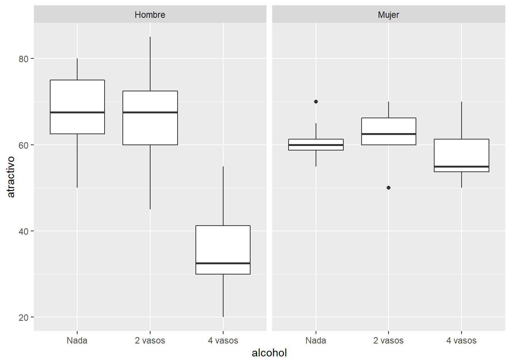
Con este gráfico podemos empezar a ver que para el caso de las mujeres, el valor promedio no cambia mucho con las distintas dosis de alcohol; sin embargo, para los hombres se observa una mayor dispersión de los datos y el atractivo promedio cae dramaticamente despues de 4 cervezas.
A continuación vamos a obtener estadisticos descriptivos de los datos con ayuda de rstatix. En este caso, es de particular importancía evaluar los dato no solo de cada factor (alcohol y genero) sino como interactuan ambas variables, por lo que requerimos los estadísticos de todas las combinaciones
goggle %>%
group_by(genero, alcohol) %>%
get_summary_stats(atractivo)# A tibble: 6 x 15
genero alcohol variable n min max median q1 q3 iqr mad mean
<fct> <fct> <chr> <dbl> <dbl> <dbl> <dbl> <dbl> <dbl> <dbl> <dbl> <dbl>
1 Hombre Nada atracti~ 8 50 80 67.5 62.5 75 12.5 11.1 66.9
2 Hombre 2 vasos atracti~ 8 45 85 67.5 60 72.5 12.5 11.1 66.9
3 Hombre 4 vasos atracti~ 8 20 55 32.5 30 41.2 11.2 7.41 35.6
4 Mujer Nada atracti~ 8 55 70 60 58.8 61.2 2.5 3.71 60.6
5 Mujer 2 vasos atracti~ 8 50 70 62.5 60 66.2 6.25 3.71 62.5
6 Mujer 4 vasos atracti~ 8 50 70 55 53.8 61.2 7.5 7.41 57.5
# ... with 3 more variables: sd <dbl>, se <dbl>, ci <dbl>ggplot(goggle, aes(x = atractivo, fill = genero))+
geom_density()+
facet_grid(genero ~ alcohol)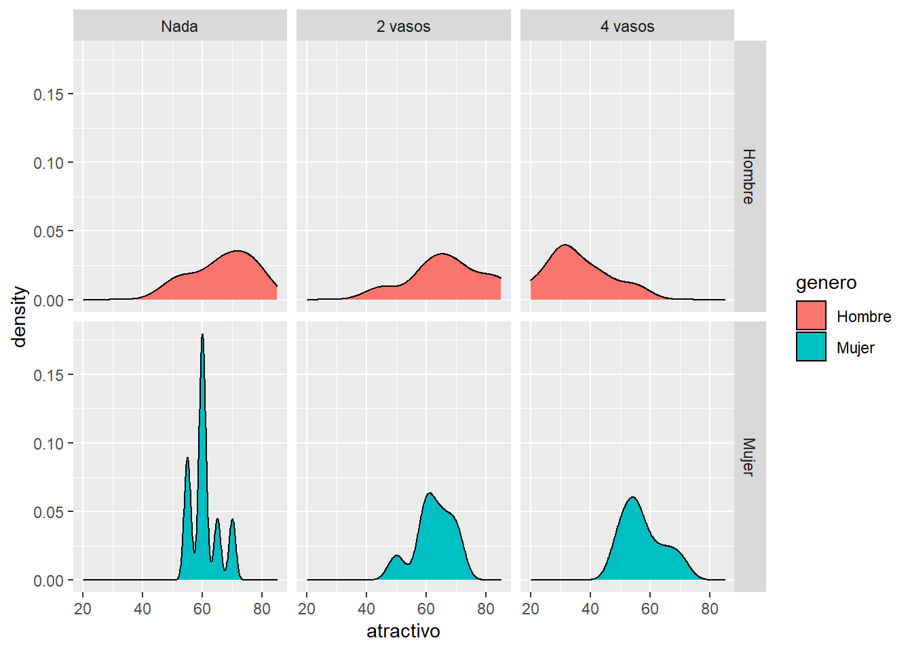
De la misma manera, es posible probar la normalidad con Shapiro-Wilk por grupo:
goggle %>%
group_by(genero, alcohol) %>%
shapiro_test(atractivo)# A tibble: 6 x 5
genero alcohol variable statistic p
<fct> <fct> <chr> <dbl> <dbl>
1 Hombre Nada atractivo 0.941 0.622
2 Hombre 2 vasos atractivo 0.967 0.870
3 Hombre 4 vasos atractivo 0.951 0.720
4 Mujer Nada atractivo 0.872 0.156
5 Mujer 2 vasos atractivo 0.899 0.283
6 Mujer 4 vasos atractivo 0.897 0.273Por úlitmo vamos a calcular la prueba de Levene para evaluar si las varianzas en los valores de atractivo difieren entre los grupos. Al igual que en los casos anteriores, idealmente queremos saber si la varianza difieren entre los seis grupos, por lo que es necesario agregar la interacción de la siguiente manera:
goggle %>%
levene_test(atractivo ~ interaction(genero, alcohol))# A tibble: 1 x 4
df1 df2 statistic p
<int> <int> <dbl> <dbl>
1 5 42 1.43 0.235alternativamente:
goggle %>%
levene_test(atractivo ~ genero * alcohol)# A tibble: 1 x 4
df1 df2 statistic p
<int> <int> <dbl> <dbl>
1 5 42 1.43 0.235o utilizando la función leveneTestdentro del paquete car:
car::leveneTest(atractivo ~ genero * alcohol, data = goggle)Levene's Test for Homogeneity of Variance (center = median)
Df F value Pr(>F)
group 5 1.4252 0.2351
42 2.2 Ajustar un modelo factorial
Para crear un modelo ANOVA factorial es posible utilizar las mismas funciones que se revisaron en el modulo de anova que son: lm() y aov().
Para agregar un nuevo predictor a nuestor modelo simplemente escribimos + nombreVariable en el modelo, por lo que si quisieramos predecir el atractivo a partir del genero y alcohol simplemente escribiriamos atractivo ~ genero + alcohol. A esto se le conoce como modelo aditivo.
Sin embargo, quereos incluir la posible interacción entre ambos predictores debemos por lo que esta interacción se debe inlcuir en el modelo de la siguiente forma:
goggle_modelo1 <- lm(atractivo ~ genero + alcohol + genero:alcohol, data = goggle)
anova(goggle_modelo1)Analysis of Variance Table
Response: atractivo
Df Sum Sq Mean Sq F value Pr(>F)
genero 1 168.7 168.75 2.0323 0.1614
alcohol 2 3332.3 1666.15 20.0654 7.649e-07 ***
genero:alcohol 2 1978.1 989.06 11.9113 7.987e-05 ***
Residuals 42 3487.5 83.04
---
Signif. codes: 0 '***' 0.001 '**' 0.01 '*' 0.05 '.' 0.1 ' ' 1O en su defecto, de manera resumida:
goggle_modelo2 <- lm(atractivo ~ genero * alcohol, data = goggle)
anova(goggle_modelo2)Analysis of Variance Table
Response: atractivo
Df Sum Sq Mean Sq F value Pr(>F)
genero 1 168.7 168.75 2.0323 0.1614
alcohol 2 3332.3 1666.15 20.0654 7.649e-07 ***
genero:alcohol 2 1978.1 989.06 11.9113 7.987e-05 ***
Residuals 42 3487.5 83.04
---
Signif. codes: 0 '***' 0.001 '**' 0.01 '*' 0.05 '.' 0.1 ' ' 1la cual tambien puede aplicarse con la función aov:
goggle_modeloaov <- aov(atractivo ~ genero * alcohol, data = goggle)2.3 Interpretación de los resultados
De los resultados obtenidos en la tabla ANOVA:
| Df | Sum Sq | Mean Sq | F value | Pr(>F) | |
|---|---|---|---|---|---|
| genero | 1 | 168.750 | 168.75000 | 2.032258 | 0.1613818 |
| alcohol | 2 | 3332.292 | 1666.14583 | 20.065412 | 0.0000008 |
| genero:alcohol | 2 | 1978.125 | 989.06250 | 11.911290 | 0.0000799 |
| Residuals | 42 | 3487.500 | 83.03571 | NA | NA |
Lo primero que se aprecia es un efecto significativo del alcohol (\(P < 0.05\)) lo que nos indica que la cantidad de alcohol consumo afecta significativamente la persepción del atractivo. Esto significa que cuando ignoramos si el participante es hombre o mujer, la cantidad de alcohol influye en su persepción.
ggbarplot(goggle, x = "alcohol", y = "atractivo", add = "mean_se")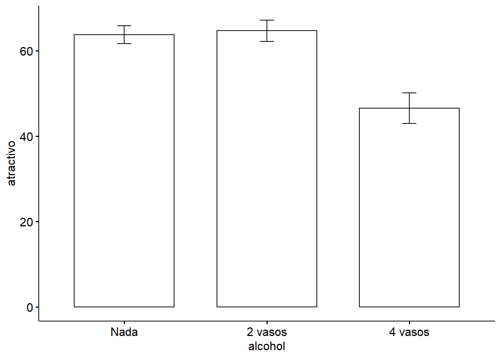
Por otro lado, de los resultados de la ANOVA podemos observar que el efecto del género no es significativ (\(P=0.161\)). Este efecto significa que, cuando ignoramos la cantidad de alcohol que se ha consumido, el género del participante no influye en la persepción del atractivo.
ggbarplot(goggle, x = "genero", y = "atractivo", add = "mean_se")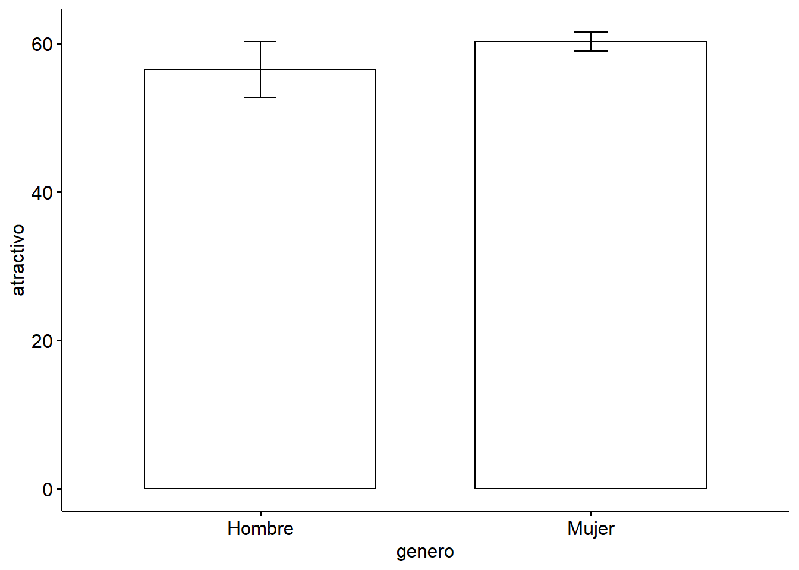
Finalmente, la tabla ANOVA nos muestra que la interacción entre el efecto de género y alcohol es altamente significativa (\(P < 0.001\)) lo cual nos indica que el efecto del alcohol sobre la persepción del atractivo difiere entre ambos géneros. En presencia de una interacción significativa, no tiene sentido interpretar cada efecto principal de manera aislada.
ggline(goggle, x = "alcohol", y = "atractivo", add = "mean_se",
color = "genero", position = position_dodge(0.1))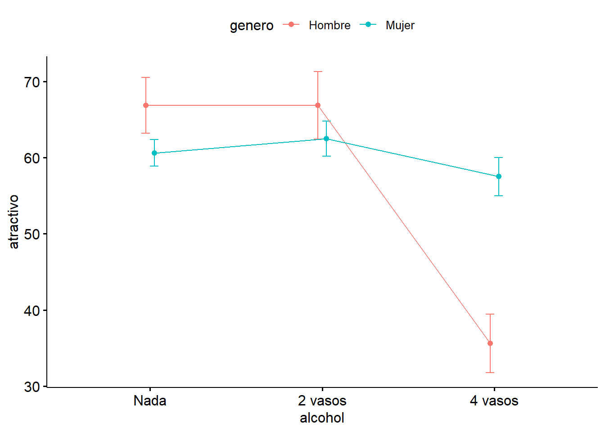
ggline(goggle, x = "genero", y = "atractivo", color = "alcohol", add = "mean_se",
position = position_dodge(0.1))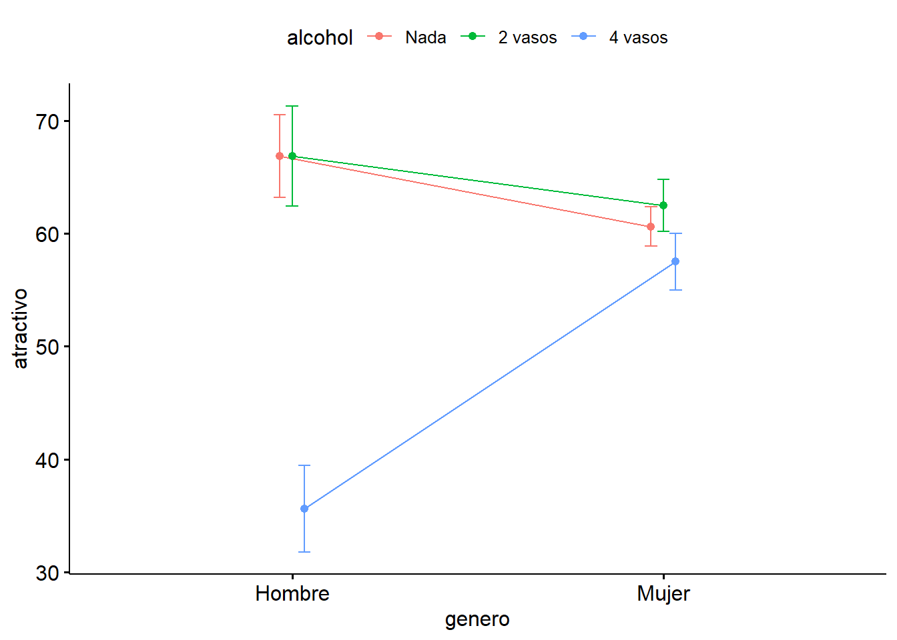
Las líneas no paralelas usualmente indican un efecto de interacción significativo
En ggplot, esto se puede gráficar de la siguiente manera:
ggplot(data = goggle, aes(x = alcohol, y = atractivo, colour = genero,
group = genero)) +
stat_summary(fun = mean, geom = "point") +
stat_summary(fun = mean, geom = "line") +
labs(y = 'mean (resistencia)') +
theme_bw()Finalmente, el paquete HH nos permite visualizar cada uno los effectos asi como la interacción
#install.packages("HH")
HH::interaction2wt(atractivo ~ genero * alcohol, data = goggle)This version of bslib is designed to work with shiny version 1.6.0 or higher. 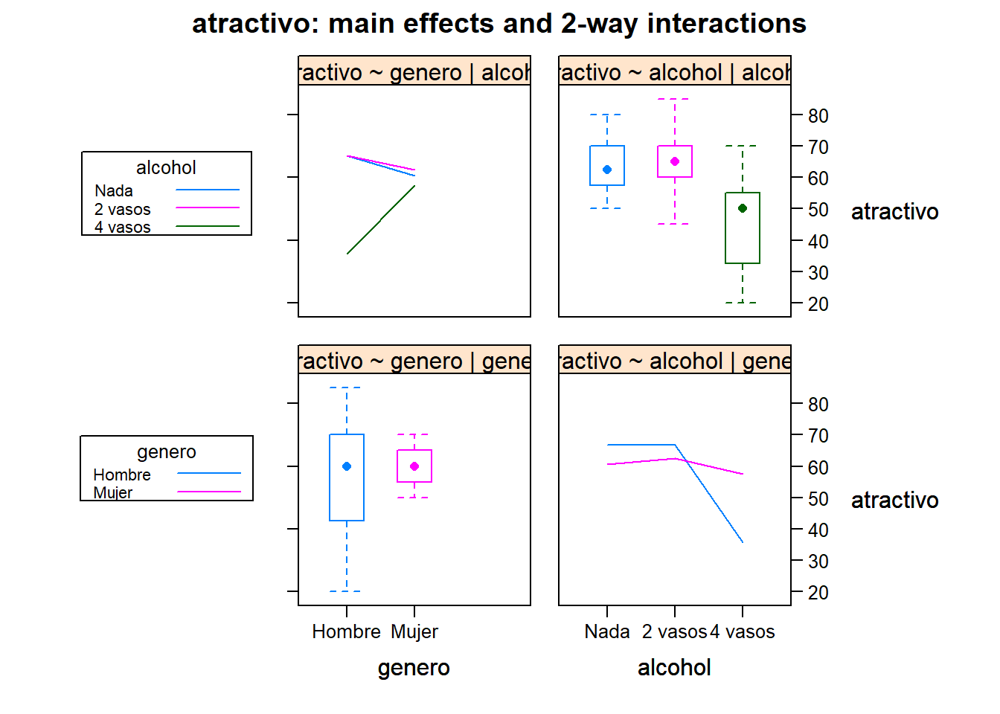
2.4 Validación del modelo a partir del análisis de residuales
Para poder dar por válidos los resultados del ANOVA es necesario verificar que se satisfacen las condiciones de un ANOVA.
par(mfrow = c(2,2))
plot(goggle_modelo1, which = 1:4)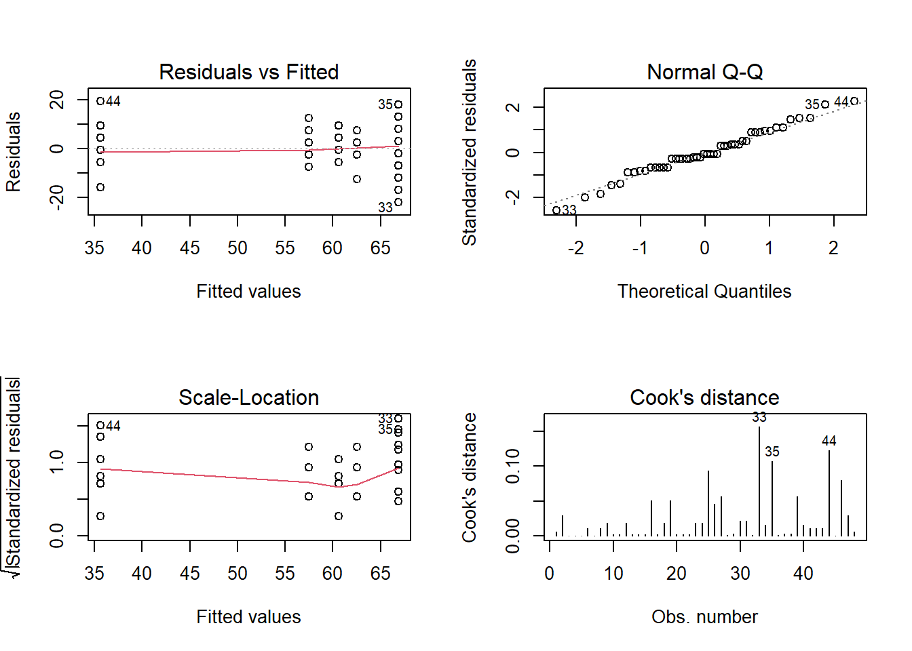
dev.off()null device
1 Los residuos muestran la misma varianza para los distintos niveles (homocedasticidad) y se distribuyen de forma normal.
3 Conejillo de indias y jugo de naranja
![]()
Para este ejemplo, utilizaremos la base de datos toothgrowth. Esta corresponde a un experimento realizado en conejillos de indias para demostrar el efecto de adminstrar jugo de naranja (OJ) y vitamina c (VC) a diferentes dosis (0.5, 1.0 y 2.0 mg).
Para abrir la tabla ejecutamos
data("ToothGrowth")
dientes <- ToothGrowth
summary(dientes) len supp dose
Min. : 4.20 OJ:30 Min. :0.500
1st Qu.:13.07 VC:30 1st Qu.:0.500
Median :19.25 Median :1.000
Mean :18.81 Mean :1.167
3rd Qu.:25.27 3rd Qu.:2.000
Max. :33.90 Max. :2.000 dientes <- dientes %>%
mutate(dose = factor(dose))Obten el resumen de los datos
dientes_sum <- dientes %>%
group_by(supp, dose) %>%
get_summary_stats(len, type = "mean_sd")
dientes_sum# A tibble: 6 x 6
supp dose variable n mean sd
<fct> <fct> <chr> <dbl> <dbl> <dbl>
1 OJ 0.5 len 10 13.2 4.46
2 OJ 1 len 10 22.7 3.91
3 OJ 2 len 10 26.1 2.66
4 VC 0.5 len 10 7.98 2.75
5 VC 1 len 10 16.8 2.52
6 VC 2 len 10 26.1 4.80Visualización de los datos
ggplot(dientes, aes(x = supp, y = len, col = dose))+
geom_boxplot()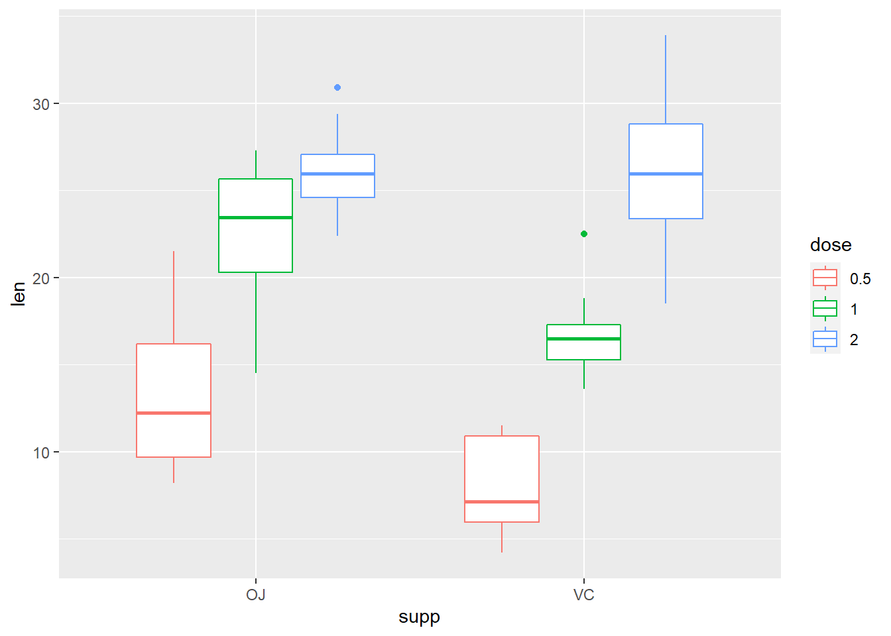
A partir de la representación gráfica y el calculo de las medias se puede intuir que existe una diferncia en el crecimiento del diente con la dosis.
A priori, parece que se satisfacen las condiciones necesarios para realizar un ANOVA, aunque se requiere hacer las pruebas correspondientes.
dientes_shap <- dientes %>%
group_by(dose, supp) %>%
shapiro_test(len)
dientes_shap# A tibble: 6 x 5
supp dose variable statistic p
<fct> <fct> <chr> <dbl> <dbl>
1 OJ 0.5 len 0.893 0.182
2 VC 0.5 len 0.890 0.170
3 OJ 1 len 0.927 0.415
4 VC 1 len 0.908 0.270
5 OJ 2 len 0.963 0.815
6 VC 2 len 0.973 0.919dientes_leven <- dientes %>%
levene_test(len ~ supp * dose)
dientes_leven# A tibble: 1 x 4
df1 df2 statistic p
<int> <int> <dbl> <dbl>
1 5 54 1.71 0.148Vamos a empezar nuestro análisis revisando cada uno de los factores principales (main effects)supp y dose
me_supp <- aov(len ~ supp, data = dientes)
anova(me_supp)Analysis of Variance Table
Response: len
Df Sum Sq Mean Sq F value Pr(>F)
supp 1 205.4 205.35 3.6683 0.06039 .
Residuals 58 3246.9 55.98
---
Signif. codes: 0 '***' 0.001 '**' 0.01 '*' 0.05 '.' 0.1 ' ' 1Esto nos indica que no hay evidencia para rechazar la hipotesis nula que las medias por el suplemento son diferentes. Por si solo, pareciera que el tipo de suppemento (OJ y VC) no tuvieran efecto en la longitud del diente, lo cual se puede visualizar en la siguiente gráfica:
ggplot(dientes, aes(x = supp, y = len))+
geom_boxplot()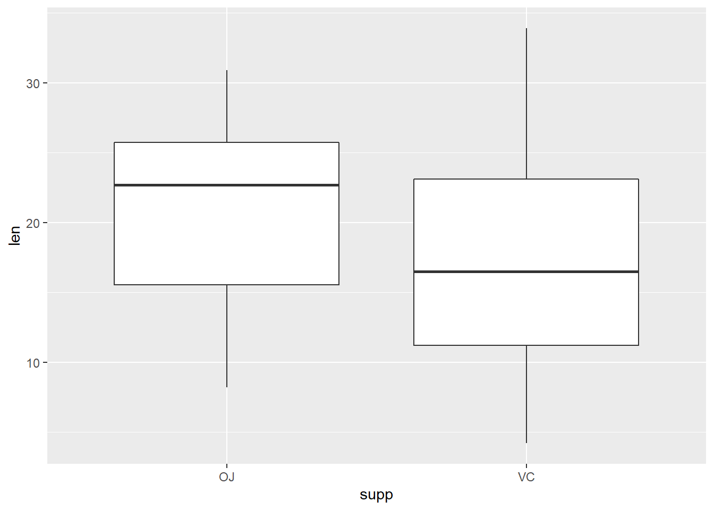
Ahora, ajustemos un modelo con el siguiente efecto principal, dose.
me_dose <- aov(len ~ dose, data = dientes)
anova(me_dose)Analysis of Variance Table
Response: len
Df Sum Sq Mean Sq F value Pr(>F)
dose 2 2426.4 1213.2 67.416 9.533e-16 ***
Residuals 57 1025.8 18.0
---
Signif. codes: 0 '***' 0.001 '**' 0.01 '*' 0.05 '.' 0.1 ' ' 1En este caso, hay evidencia para rechazar la hipótesis nula de manera que la dosis tene un efecto en la longitud del diente:
ggplot(dientes, aes(x = dose, y = len))+
geom_boxplot()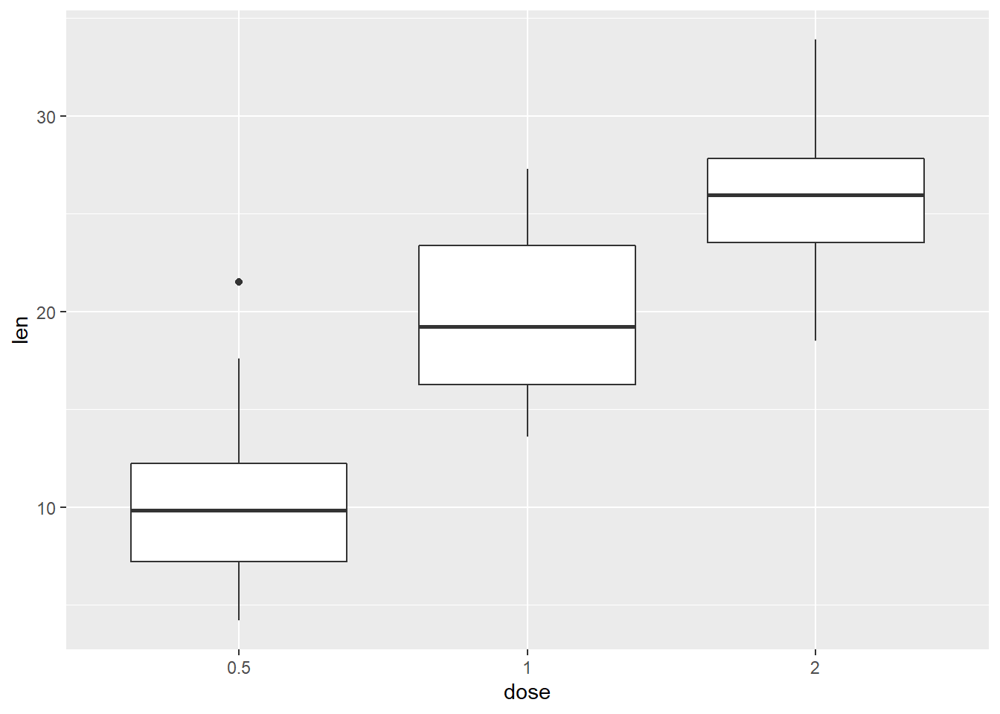
ahora ajustemos un modelo con interacción
dientes_mod_int <- aov(len ~ supp * dose, data = dientes)
anova(dientes_mod_int)Analysis of Variance Table
Response: len
Df Sum Sq Mean Sq F value Pr(>F)
supp 1 205.35 205.35 15.572 0.0002312 ***
dose 2 2426.43 1213.22 92.000 < 2.2e-16 ***
supp:dose 2 108.32 54.16 4.107 0.0218603 *
Residuals 54 712.11 13.19
---
Signif. codes: 0 '***' 0.001 '**' 0.01 '*' 0.05 '.' 0.1 ' ' 1Dado que el modelo len ~ dose mostró diferencias significativas en las medias, esperariamos que el modelo factorial diera los mismos resultados.
Por otro lado, observamos que el efecto principal supp ahora es significativo. Esto indica que al controlar por el nivel de la dosis y la interacción dose*supp hay un efecto independiente por el tipo de suplemento.
ggline(dientes, x = "supp", y = "len", col = "dose", add = "mean_se")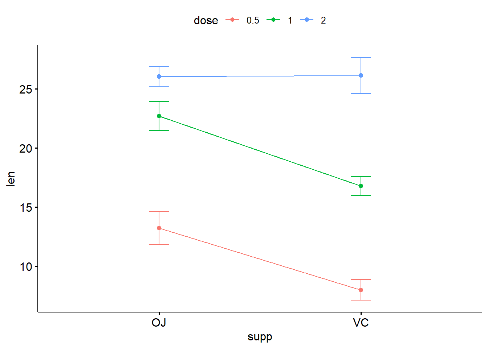
ggline(dientes, x = "dose", y = "len", col = "supp", add = "mean_se")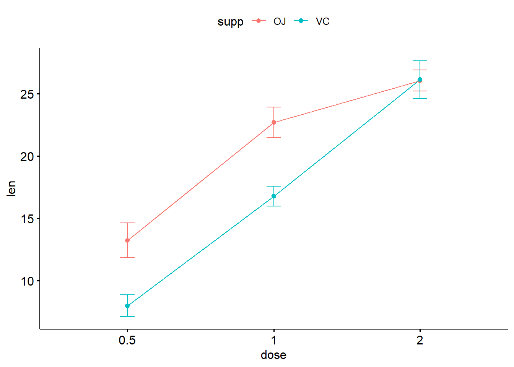
Podemos usar la herramienta del paquete HH para visualizar esta interacción
install.packages("HH")library(HH)
interaction2wt(len ~ supp * dose, data = dientes)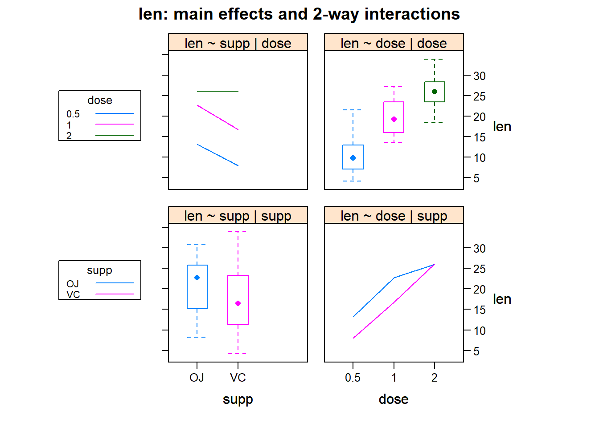
3.1 Comparaciones multiples
Si los resultados de la ANOVA son significativos, entonces es necesario realizar pruebas post hoc. Esto se puede realizar con la función TukeyHSD sobre un objetvo aov
Si la interacción es no significativa entonces se interpretan los resultados de los efectos principales. Pero si la interaccón es significativa entonces debemos interpretar las comparaciones mulitples de la interacción.
TukeyHSD(dientes_mod_int) Tukey multiple comparisons of means
95% family-wise confidence level
Fit: aov(formula = len ~ supp * dose, data = dientes)
$supp
diff lwr upr p adj
VC-OJ -3.7 -5.579828 -1.820172 0.0002312
$dose
diff lwr upr p adj
1-0.5 9.130 6.362488 11.897512 0.0e+00
2-0.5 15.495 12.727488 18.262512 0.0e+00
2-1 6.365 3.597488 9.132512 2.7e-06
$`supp:dose`
diff lwr upr p adj
VC:0.5-OJ:0.5 -5.25 -10.048124 -0.4518762 0.0242521
OJ:1-OJ:0.5 9.47 4.671876 14.2681238 0.0000046
VC:1-OJ:0.5 3.54 -1.258124 8.3381238 0.2640208
OJ:2-OJ:0.5 12.83 8.031876 17.6281238 0.0000000
VC:2-OJ:0.5 12.91 8.111876 17.7081238 0.0000000
OJ:1-VC:0.5 14.72 9.921876 19.5181238 0.0000000
VC:1-VC:0.5 8.79 3.991876 13.5881238 0.0000210
OJ:2-VC:0.5 18.08 13.281876 22.8781238 0.0000000
VC:2-VC:0.5 18.16 13.361876 22.9581238 0.0000000
VC:1-OJ:1 -5.93 -10.728124 -1.1318762 0.0073930
OJ:2-OJ:1 3.36 -1.438124 8.1581238 0.3187361
VC:2-OJ:1 3.44 -1.358124 8.2381238 0.2936430
OJ:2-VC:1 9.29 4.491876 14.0881238 0.0000069
VC:2-VC:1 9.37 4.571876 14.1681238 0.0000058
VC:2-OJ:2 0.08 -4.718124 4.8781238 1.00000004 ANOVA de dos vías con diseño desbalanceado
Un diseño con datos no balanceados tiene un número desigual de invididuos en cada grupo.
Existen tres diferentes maneras de aplicar una ANOVA de dos vías con diseño desbalanceado. Estos se conocen como suma de cuadrados Tipo I, Tipo II y Tipo III. El análisis detallado de cada uno va mas allá de los objetivos de este curso pero una explicación detallada puede encontrarse aquí.
En general, el método recomendado cuando tenemos interés en la interacción de los efectos es el *Tipo III**.
Cuando tenemos un diseño balanceado, los tres métodos arrojan el mismo resultad. Sin embargo, cauando tenemos un diseño desbalanceado el análisis arrojara resultados distintos
Para utilizarlo, necesitamos aplicar la función Anova() del paquete car.
car::Anova(goggle_modeloaov, type = "III")Anova Table (Type III tests)
Response: atractivo
Sum Sq Df F value Pr(>F)
(Intercept) 35778 1 430.8763 < 2.2e-16 ***
genero 156 1 1.8817 0.1774
alcohol 5208 2 31.3620 4.648e-09 ***
genero:alcohol 1978 2 11.9113 7.987e-05 ***
Residuals 3488 42
---
Signif. codes: 0 '***' 0.001 '**' 0.01 '*' 0.05 '.' 0.1 ' ' 1
sessionInfo()R version 4.0.5 (2021-03-31)
Platform: x86_64-w64-mingw32/x64 (64-bit)
Running under: Windows 10 x64 (build 19043)
Matrix products: default
locale:
[1] LC_COLLATE=English_United States.1252
[2] LC_CTYPE=English_United States.1252
[3] LC_MONETARY=English_United States.1252
[4] LC_NUMERIC=C
[5] LC_TIME=English_United States.1252
attached base packages:
[1] grid stats graphics grDevices utils datasets methods
[8] base
other attached packages:
[1] HH_3.1-43 gridExtra_2.3 multcomp_1.4-17
[4] TH.data_1.0-10 MASS_7.3-53 survival_3.2-10
[7] mvtnorm_1.1-1 latticeExtra_0.6-29 lattice_0.20-41
[10] ggpubr_0.4.0 rstatix_0.7.0 forcats_0.5.1
[13] stringr_1.4.0 dplyr_1.0.5 purrr_0.3.4
[16] readr_1.4.0 tidyr_1.1.3 tibble_3.0.4
[19] ggplot2_3.3.5 tidyverse_1.3.1 workflowr_1.6.2
loaded via a namespace (and not attached):
[1] colorspace_2.0-0 ggsignif_0.6.0 ellipsis_0.3.1
[4] rio_0.5.16 rprojroot_2.0.2 htmlTable_2.1.0
[7] base64enc_0.1-3 fs_1.5.0 rstudioapi_0.13
[10] farver_2.0.3 fansi_0.4.2 lubridate_1.7.10
[13] xml2_1.3.2 codetools_0.2-18 splines_4.0.5
[16] leaps_3.1 knitr_1.30 Formula_1.2-4
[19] jsonlite_1.7.2 broom_0.7.6 Rmpfr_0.8-2
[22] cluster_2.1.0 dbplyr_2.1.1 png_0.1-7
[25] shiny_1.5.0 compiler_4.0.5 httr_1.4.2
[28] backports_1.2.1 fastmap_1.0.1 assertthat_0.2.1
[31] Matrix_1.3-2 cli_2.5.0 later_1.1.0.1
[34] htmltools_0.5.1.1 tools_4.0.5 gmp_0.6-2
[37] gtable_0.3.0 glue_1.4.2 reshape2_1.4.4
[40] Rcpp_1.0.5 carData_3.0-4 cellranger_1.1.0
[43] jquerylib_0.1.4 vctrs_0.3.8 lmtest_0.9-38
[46] xfun_0.23 ps_1.5.0 openxlsx_4.2.3
[49] rvest_1.0.0 mime_0.9 lifecycle_1.0.0
[52] zoo_1.8-8 scales_1.1.1 hms_1.0.0
[55] promises_1.1.1 sandwich_3.0-0 RColorBrewer_1.1-2
[58] yaml_2.2.1 curl_4.3 sass_0.4.0
[61] rpart_4.1-15 stringi_1.5.3 highr_0.8
[64] checkmate_2.0.0 zip_2.1.1 rlang_0.4.11
[67] pkgconfig_2.0.3 evaluate_0.14 htmlwidgets_1.5.3
[70] labeling_0.4.2 tidyselect_1.1.1 plyr_1.8.6
[73] magrittr_2.0.1 R6_2.5.0 Hmisc_4.4-2
[76] generics_0.1.0 DBI_1.1.0 pillar_1.6.0
[79] haven_2.3.1 whisker_0.4 foreign_0.8-81
[82] withr_2.4.2 nnet_7.3-14 abind_1.4-5
[85] modelr_0.1.8 crayon_1.4.1 car_3.0-10
[88] utf8_1.2.1 rmarkdown_2.9 jpeg_0.1-8.1
[91] readxl_1.3.1 data.table_1.13.6 git2r_0.27.1
[94] vcd_1.4-8 reprex_2.0.0 digest_0.6.27
[97] xtable_1.8-4 httpuv_1.5.4 munsell_0.5.0
[100] bslib_0.2.5.1